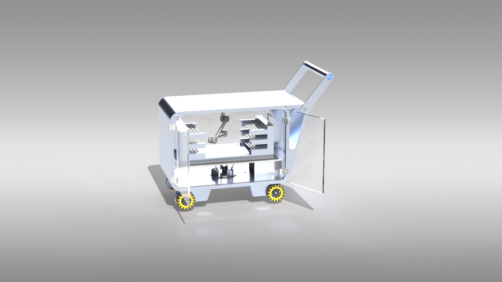
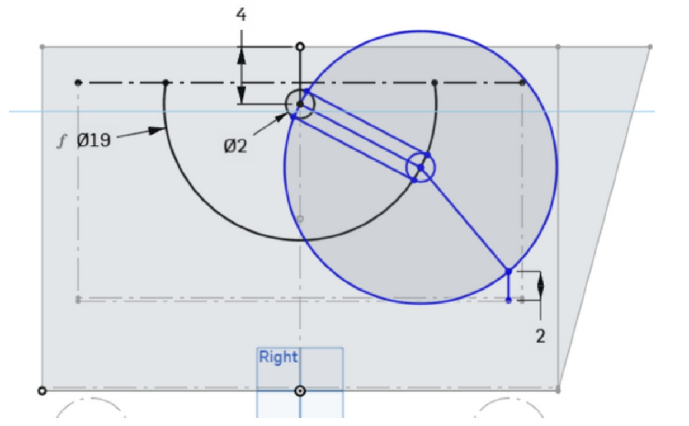
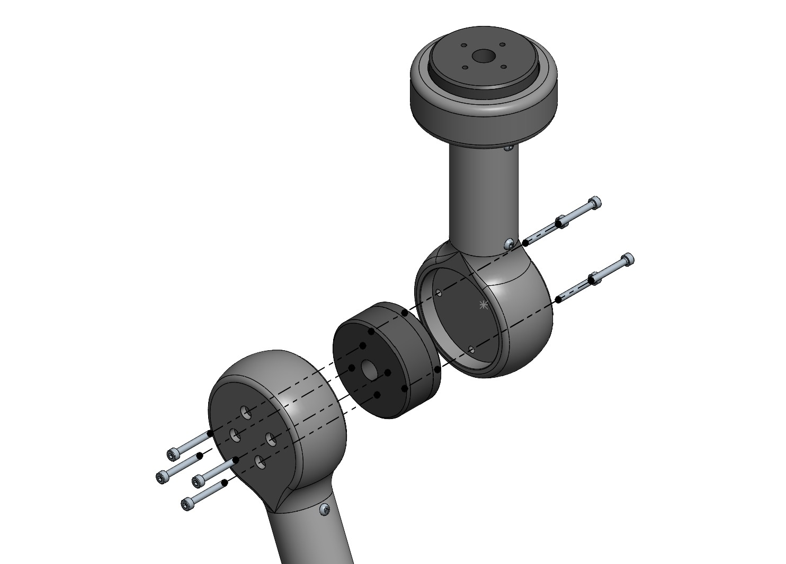
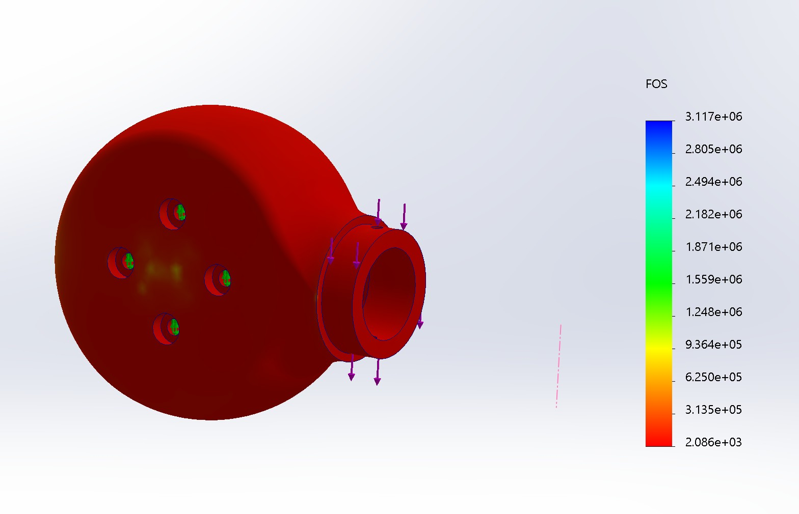
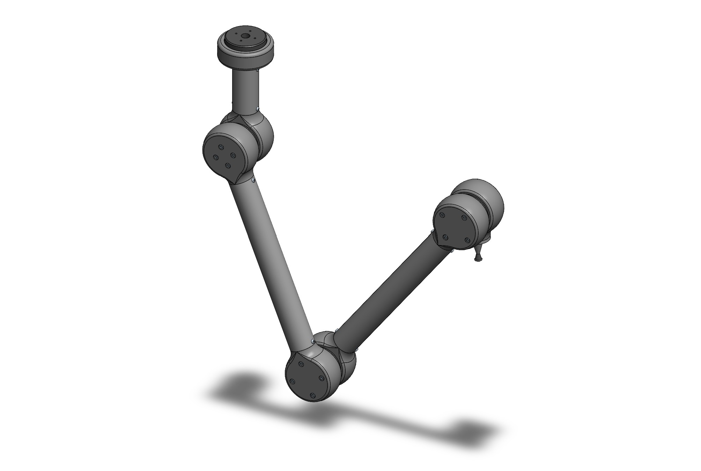
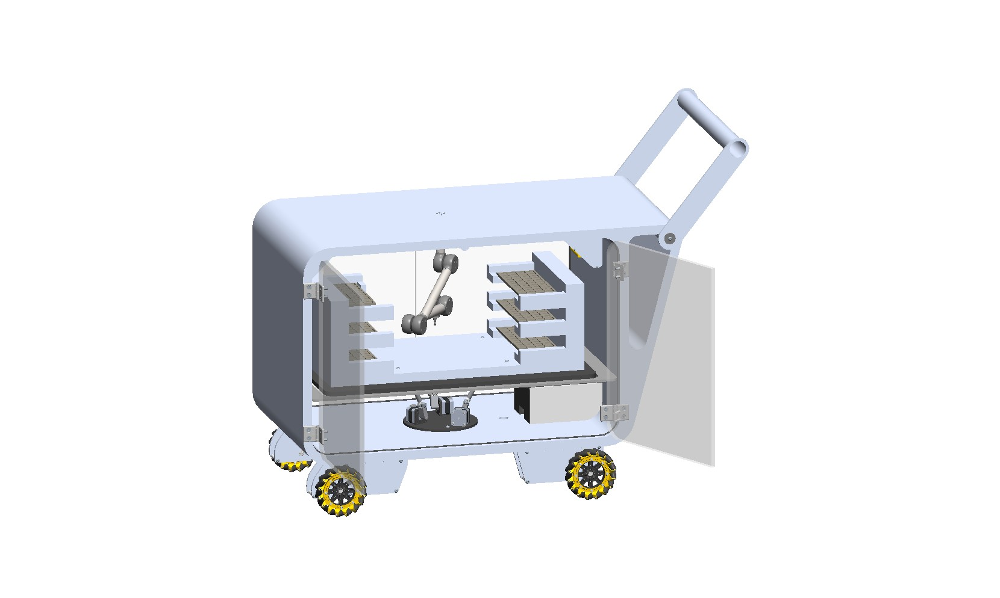
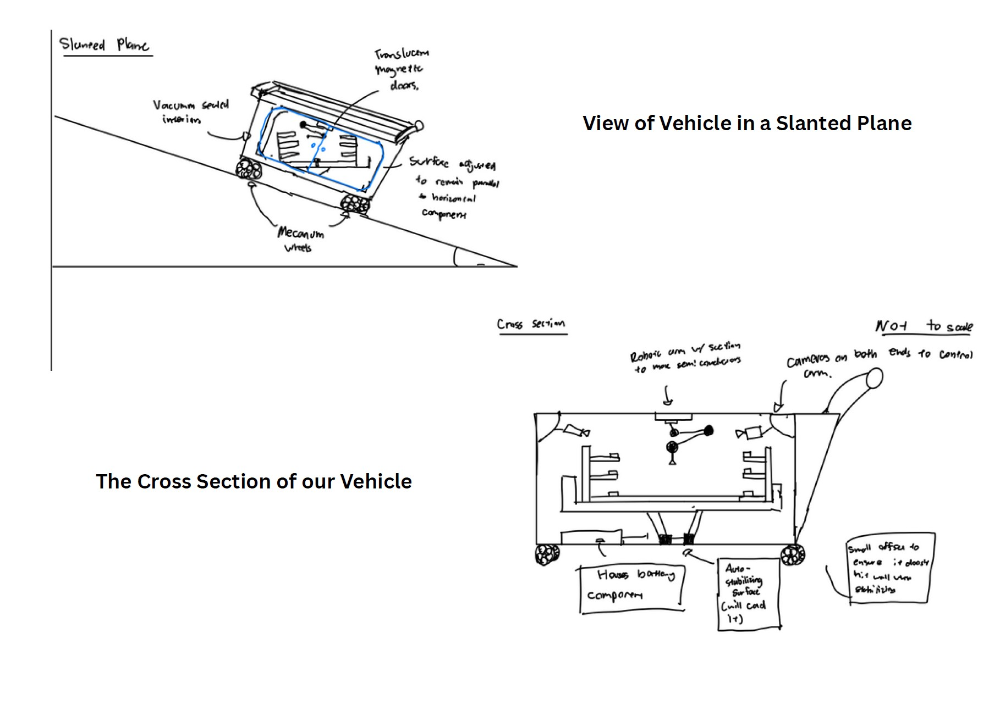

Overview
For a 12-hour CADathon, my team was challenged to design a scalable material-handling system for semiconductor
fabrication environments. The system needed to transport sensitive materials while minimizing vibration, static
discharge, and contamination, accommodate loads from 5–50 lb, and remain maneuverable within cleanroom
environments.
Our solution was an autonomous cleanroom cart incorporating three primary mechanical subsystems: an
omnidirectional cart, an active stabilization platform, and a robotic arm for transferring sensitive materials
between external workstations and the enclosed storage area.
My primary responsibility was the robotic arm, including its geometry, joint and motor packaging, structural
design, and material selection. I also contributed to the cart's wheel integration and the team's final design
report.
Robotic Arm Design
Workspace & Geometry
The robotic arm needed to pick and place sensitive materials throughout the enclosed cart while also extending
outside of the vehicle to transfer materials to and from cleanroom workstations. Because the available space was
limited, one of my first tasks was determining an arm geometry that could cover the required workspace without
interfering with the surrounding cart structure.
I modeled the reachable workspace using a series of circles representing the motion of each arm segment and used
geometric calculations to determine the required link lengths. I developed a three-joint architecture in which the
final segment would remain vertical during motion to keep transported materials level.

Workspace sketch of robotic arm geometry
Joint & Motor Integration
After defining the overall arm geometry, I selected a shaftless brushless DC motor architecture that allowed the
arm links to attach on opposite sides of each motor. I then designed the joint housing around the motor geometry
to connect the actuator to the tubular arm segments.
The initial design used 1-inch OD 6061 aluminum tubing for the links and an FDM-printed Onyx joint housing. The
housing was designed around the motor while providing the interfaces needed to connect the surrounding arm segments.

Exploded view of robotic arm motor housing
Structural Analysis & Material Selection
I used SolidWorks Simulation to perform an initial structural analysis of the joint housing and evaluate the Onyx design under the estimated arm loading.

FEA simulation on robotic arm joint
However, structural performance was only one consideration. Because the mechanism would operate around sensitive
semiconductor materials, I also had to consider particle generation and cleanroom compatibility.
After additional material research, we changed the joint housing from FDM-printed Onyx to stainless steel, with the
component intended to be CNC machined. The arm links were also changed from aluminum tubing to fiberglass tubing
based on cleanroom and weight considerations.
Final Arm Design
The completed concept used three actuated joints to provide the reach required to move materials throughout the cart
and extend to an external workstation. I also designed the interface for an end effector, and the team incorporated a
basic vacuum-tip concept for demonstrating semiconductor pick-and-place operation.
Because moving joints and motors introduced additional contamination and static-discharge concerns, the final concept
also called for enclosing the joints with protective material rather than leaving the mechanisms exposed within the
clean environment.

Final robotic arm design
Cart Integration

Full cart design
Although the robotic arm was my primary subsystem, I also contributed to the cart's wheel integration. The vehicle
used four mecanum wheels to provide omnidirectional motion, allowing it to strafe and maneuver through confined
cleanroom spaces without requiring conventional steering.
The team selected commercially available 140 mm mecanum wheels with planetary gearmotors and encoders for the drive
system.
Design Process
Because the entire project was completed within 12 hours, we had to move quickly from an open-ended prompt to a
complete integrated concept. We began with sketches and 2D layouts to allocate space between the cart, stabilizer,
robotic arm, and electronics before developing the components in CAD. Onshape allowed the team to work on separate
subsystems simultaneously before integrating them into the complete assembly.
Partway through the competition, we received feedback from senior mechanical engineering students and used it to
reconsider areas including material selection and contamination control before completing the final design.

Brainstorming sketch of the entire cart design
Future Improvements
The 12-hour time constraint meant that several areas of the robotic arm remained conceptual. With additional
development time, I would perform more complete workspace analysis to optimize the arm lengths and use motor torque
calculations throughout the arm's range of motion to properly size each actuator. These were also identified as
limitations in our final submission.
I would also refine the joint interfaces for manufacturing and assembly, evaluate the structural loading of the
complete arm rather than only individual components, and develop the end effector beyond the conceptual vacuum-tip
design.
What I Learned
This project taught me how differently I have to approach mechanical design when development time is extremely limited.
Rather than spending significant time optimizing individual components, I had to identify the major functional
requirements, establish an overall architecture, perform enough calculations to define the geometry, and move quickly
into CAD so that my subsystem could be integrated with the rest of the team's design.
Designing for a semiconductor cleanroom also made me consider requirements beyond structural performance. Material
selection, particle generation, static discharge, contamination, and enclosed mechanisms all affected decisions that I
would not normally encounter when designing general mechanical hardware.
The project also gave me experience designing a subsystem as part of a larger assembly being developed simultaneously by
other engineers. Defining the robotic arm's workspace and packaging early was important because every change to its
geometry affected the cart, storage area, stabilizer, and electronics around it. Working within those interfaces while
completing the design under a 12-hour deadline was one of the most valuable parts of the project.